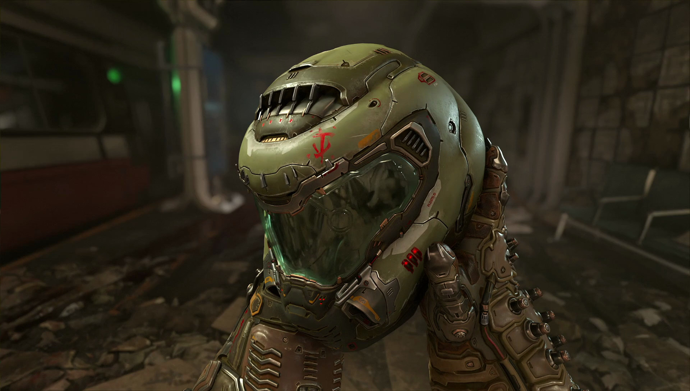
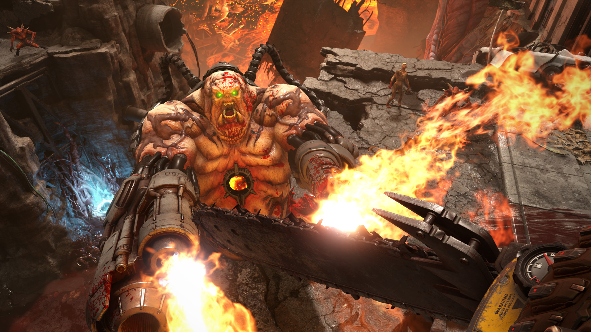
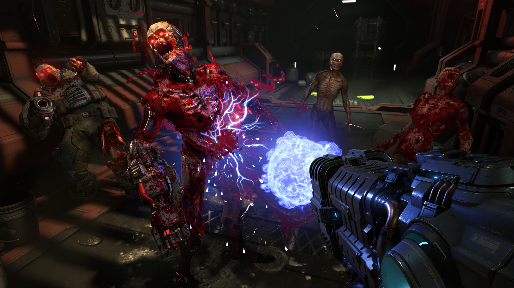
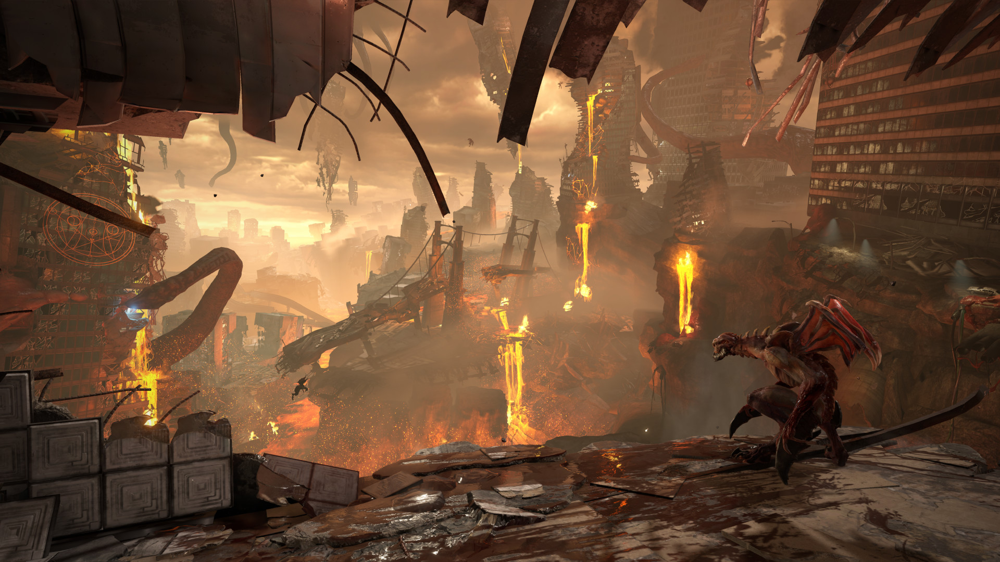

The army of hell has reached earth. Become the Slayer in an epic solo campaign, slaying demons across dimensions to stop the utter destruction of humanity.
Rip and Tear, until it is done.
Single Player
FPS
Great soundtrack
Difficult
Fast-Paced
Rating
Rating: Very positive
Release Date: 20 mrt 2020
Publisher: Bethesda Softworks
Developer: id software




System requirements
OS: 64-bit Windows 7 / 64-Bit Windows 10
Processor: Intel Core i5 @ 3.3 GHz or better, or AMD Ryzen 3 @ 3.1 GHz or better